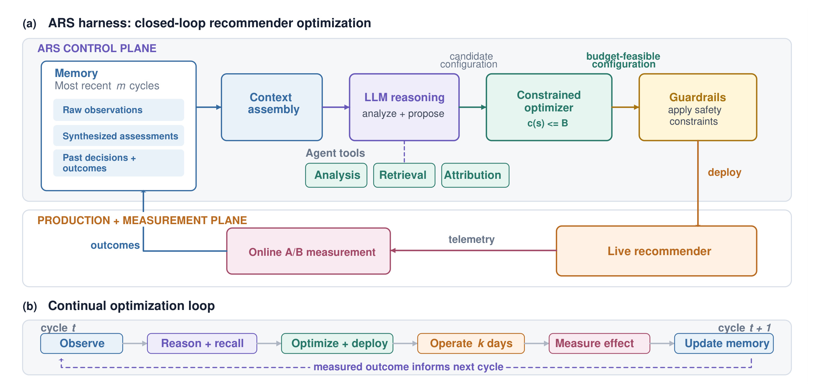
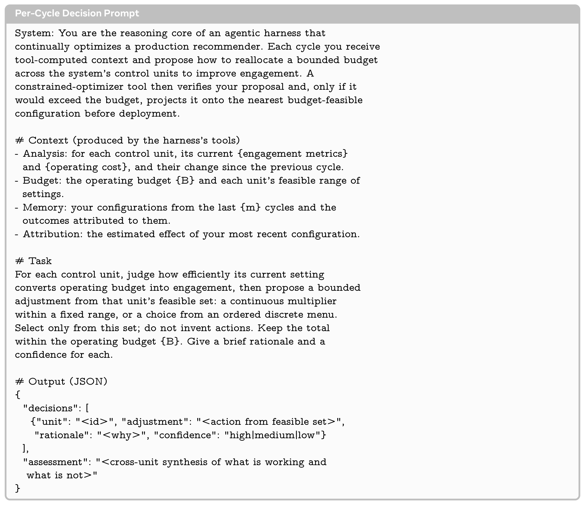
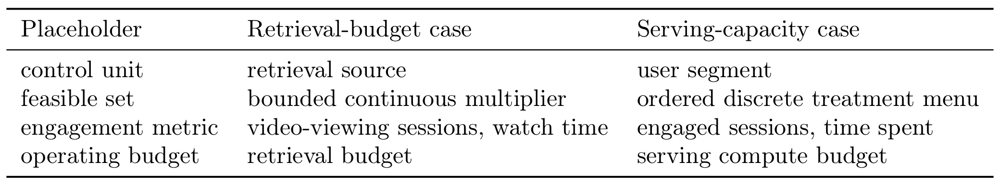
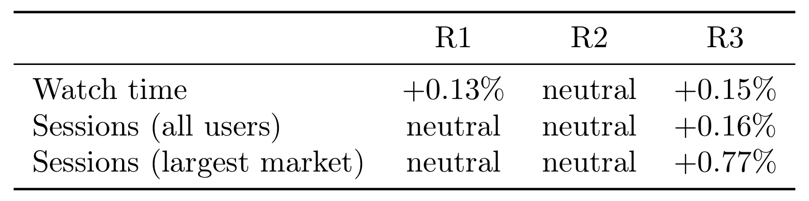
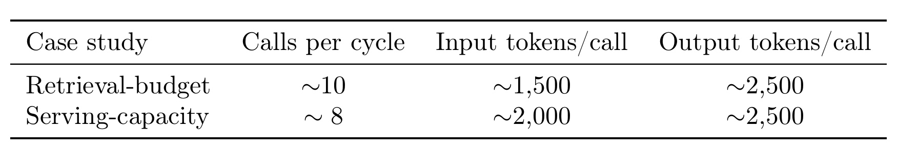

CORAL：面向生产推荐系统的 LLM 原生控制闭环
《CORAL: An LLM-Native Harness for Production Recommender Systems》由 Muhammad Rafay Azhar 等 Meta AI 研究者完成，公开于 2026 年 9 月 2 日，并被 RecSys 2026 OARS Workshop 接收。论文没有让大模型直接为每个用户生成推荐，而是把它放到生产推荐系统的“控制面”：读取聚合运行信号，回顾自己过去作出的配置及其线上结果，调用确定性分析与优化工具，再在固定预算和安全护栏内调整真实推荐服务。论文入口为 arXiv:2609.02730。arXiv 页面和已核验论文首页没有给出独立代码仓库，因此目前能复核的是论文披露的框架、prompt 模板、公式和两项生产 A/B 结果，不能把系统视作已经开源。
生产推荐系统的内容、用户行为和上游模型持续变化，但人工实验一次只能探查巨大配置空间中的很小区域，流程缓慢且偏被动，许多控制项长期不再复查，系统因而会逐渐偏离当前最优运行点。现有 LLM 推荐工作又很少让 agent 持续作用于在线系统，并从自己决策的真实测量后果中学习。
1. 背景和问题
1.1 推荐模型之外，还有一个长期被人工维护的控制面
工业推荐并不是单一排序模型。候选召回、粗排与精排、缓存、预取和服务容量共同组成多阶段链路，每一阶段又暴露大量并非端到端学习出来的控制变量：某个召回源应占多少候选预算、某类用户应采用哪一档服务策略、缓存与预取应该多激进、总算力如何在模块或人群之间分配。模型参数可以通过训练数据更新，但这些系统级选择往往由算法工程师依据监控、经验和在线实验手工维护。CORAL 选择的恰是这一层，而不是再造一个离线推荐模型。
手工循环本身并非无效：工程师提出假设、实现改动、运行 A/B、阅读结果，再决定扩大、回撤或换一个方向。但它有三重结构性限制。第一，设计空间远大于可并行实验数，一次实验只覆盖局部，搜索因此保守；第二，改动通常由已观察到的退化或机会触发，天然滞后于内容与用户分布变化；第三，每轮需要工程实现和算力资源，低优先级模块会长时间冻结。论文特别指出，低信号和新用户更容易被这种流程忽略，因为聚合指标主要由高活跃用户贡献，而稀疏历史用户的收益很难在全局均值中显现。
资源约束让问题更难。若只提高召回量或给所有人更重的排序路径，互动可能上升，但生产成本也同步增加；若只削减算力，又可能损害体验。真正的操作对象是一个耦合配置：从低效单元收回预算，才能把预算投向高收益单元。于是，“哪个模块值得增加资源”不能脱离“资源从哪里回收”单独回答。CORAL 将效率作为与互动并列的一等目标，通过固定预算把这种耦合显式化。
1.2 现有 LLM4Rec 与本文缺口的差别
论文梳理的相关路线大致有三类。一类用 LLM 直接做零样本排序、生成推荐或用户模拟；一类让 agent 调用传统推荐器，并利用用户记忆改善交互；更新的一类让 agent 搜索模型、代码或离线系统配置，自动化模型开发。它们分别作用在推荐结果、用户表示或开发流程上，而 CORAL 关注“部署之后谁持续维护控制面”。这里的学习信号不是离线标签，也不是语言模型自评，而是配置上线后的遥测和 A/B treatment effect。
这一区分决定了系统安全要求。一个面向离线代码搜索的 agent 即使提出不佳方案，通常还会经过训练和评测；一个能修改线上召回预算或服务档位的 agent，错误会直接作用于用户与机器成本。语言模型适合综合异质指标、趋势、领域知识和历史结果，也能用自然语言解释决策，但它不能天然保证数值可行、参数来自允许集合，或者总预算永不越界。因此论文不把“更强的 prompt”当成充分保障，而是用数值优化器、限定动作集合、配置验证和安全护栏把 LLM 包在 harness 中。
1.3 论文实际回答的问题
CORAL 要回答的核心问题可表述为：在只能看到聚合信号、真实最优点随时间移动、每次线上试验代价高且所有决策受硬预算限制时，能否让一个通用 LLM 作为策略，在不更新模型参数的前提下，根据过去配置的测量结果持续改进下一轮配置？这不是一次性的超参数搜索。若内容生态、用户构成或上游模型在变化，昨天的好配置可能在今天退化；策略必须反复观察、行动、测量和更新记忆，目标是持续追踪移动目标。
论文把“自主”限定得相对克制：闭环能直接应用每轮配置，但仍有人类监督；随着信任积累，监督才可能逐步由自动护栏替代。两项案例也只覆盖资源分配类控制变量——一个是召回源间的连续预算乘数，另一个是人群间的离散服务档位。由此，论文证明的是同一 harness 可以承载两类受约束控制，而不是已经证明 agent 能安全修改召回逻辑、排序目标或模型结构。
作者选择 LLM 而非固定规则，是因为每个控制单元同时带有原始指标、漏斗表现、成本效率和变化趋势，其中一些判断还依赖推荐领域知识，很难压缩成一个长期不变的评分函数。更麻烦的是，相同信号在不同内容供给和用户构成下可能意味着不同动作，静态映射会随环境漂移。LLM 可以在每轮重新权衡异质证据，引用近期结果说明为何增加或收回预算，并给出人类可审阅的理由。不过，这只是“适合承担判断”的论据，不是“天然适合控制生产”的证明：若 observation 缺少关键指标，或历史 outcome 被错误归因，语言模型会在不完整上下文中自洽地做错。因此本文的研究对象不是裸 LLM，而是 LLM 加工具、预算投影、护栏、测量与短期记忆组成的整体系统。
对推荐系统而言，CORAL 的价值在于把 LLM 从请求级推理移到低频控制面：调用成本按决策周期计，而不是按用户请求计；对大模型 agent 而言，它则提供了一个非常具体的生产闭环，要求记忆必须存储可归因结果、工具必须给硬保证、输出必须可审计。两者相交之处不是“用自然语言做推荐”，而是让语言模型负责难以写成固定规则的判断，同时把可验证约束交给确定性组件。
2. 方法
2.1 非平稳约束优化：追踪移动的最优点
论文把可调表面划分为 \(N\) 个控制单元。第 \(i\) 个单元在周期 \(t\) 的设置记为 \(s_{t,i}\)，它可以是有界连续值，也可以是离散菜单中的一项；完整配置为 \(s_t=(s_{t,1},\ldots,s_{t,N})\)。系统在该周期取得业务目标 \(J_t(s)\)，同时产生运行成本 \(c_t(s)\)，成本不能超过运营者给定的预算 \(B\)。这里 \(J_t\) 可表示互动，也可以把问题对偶地写成在互动不降的条件下最小化成本；CORAL 不把目标含义写死在框架里。
符号解释：\(s_t^*\) 是周期 \(t\) 在预算内的 oracle 最优配置，\(J_t\) 是该周期的业务目标，\(c_t\) 是配置成本，\(B\) 是固定运行预算。关键点在下标 \(t\)：环境变化使 \(J_t\) 和 \(c_t\) 的响应关系随周期改变，所以 \(s_t^*\) 不是一个能永久收敛到的常量。一次找到不错配置后停止探索，并不等价于持续最优。
符号解释：\(\pi\) 是由 LLM 承担的决策策略，\(s_t\) 是它在周期 \(t\) 实际选择的配置；方括号内是相对当期最优可行配置的短缺，跨周期求和表示累计追踪损失。约束对每个周期都成立，意味着不能以某一轮超预算换取以后补偿。这个目标更接近带约束的非平稳在线决策，而不是普通离线监督学习。
策略只看到观测 \(o_t\) 和记忆 \(M_t\)，其映射写作：
符号解释：\(o_t\) 是上一观测窗口中按控制单元汇总的运行统计及相对前一窗口的变化，\(M_t\) 是最近 \(m\) 个周期的观察、判断、配置和结果。真实用户、内容和上游模型状态没有被完全暴露，所以问题是部分可观测的。论文的策略改进不依赖梯度更新，而是依赖把新 outcome 放回上下文；这使“学习”更准确地说是跨轮 in-context adaptation，而非训练一个新的策略网络。
2.2 三类跨周期记忆：观察、判断与决策结果
CORAL 把记忆拆成 observation、assessment 和 decision 三个存储。observation store 保留每个控制单元的原始聚合指标及变化，提供可追溯事实；assessment store 保存 LLM 对“哪些单元表现好、哪些在恶化、趋势如何”的简洁归纳，使后续周期不必从零重读全部信号；decision store 记录此前部署的配置及随后归因到它的结果，让模型能区分“我提出过什么”与“线上验证后发生了什么”。
三类信息的连接比简单对话历史更重要。若只存原始指标，模型每轮都可能对相同模式作出不一致解释；若只存自然语言总结，早期误判可能固化且无法回看数据；若只存动作而不存结果，agent 只能重复探索，无法知道应该强化还是反转。CORAL 让当前 observation 校正旧 assessment，又让 A/B outcome 为旧 decision 提供反馈，形成带证据的短期经验链。
论文在部署中设 \(m=3\) 个周期。这一选择试图平衡两种风险：记忆过短，无法看出动作与延迟结果之间的关系；记忆过长，已经被分布漂移淘汰的旧结论会污染当前判断。作者明确说 \(m=3\) 是合理默认值而非系统调参结果，最佳窗口还可能受季节性影响。因此，记忆长度不是已被实验验证的普遍常数，而是未来需要与漂移速度、A/B 时长及指标噪声共同选择的超参数。
2.3 工具分工：让语言模型判断，让数值优化器守预算
每轮决策不是让 LLM 直接吐出最终配置。analysis tool 计算并汇总当前统计及变化；retrieval tool 从三类记忆中取回相关周期；attribution tool 估计上一配置的效果；LLM 综合这些异质证据，判断哪些控制单元单位成本的互动产出更高，并提出有界调整。语言模型负责跨指标判断与可解释理由，确定性工具负责计算、结构化结果和硬约束，这一职责切分是 CORAL 最关键的系统设计。
最重要的工具是 constrained optimizer。它接收 LLM 对各控制单元提出的有界变更，并把候选配置投影到集合 \(\{s:c_t(s)\le B\}\) 内最接近的可行点。若候选本来满足预算，投影不改变它；若总量超支，优化器在单元之间重新分配，使最终配置按构造满足预算。由此，模型可以表达“从低效召回源回收、投向高效召回源”的方向性判断，却不能绕过预算。
这种结构也暴露出一条边界：数值可行不等于业务安全。预算投影只保证 \(c_t(s_t)\le B\)，不保证互动不下降、特定群体不受损或监控指标无异常。因此，论文还在 optimizer 后放置 guardrails，用可行性检查、有界变化范围和安全约束限制最终动作。人类监督目前仍在闭环之外观察决策与效果，表明 guardrails 尚未被证明足以独立承担全部上线责任。
2.4 固定节拍闭环：部署、测量、归因、写回
Harness 按固定顺序运行，而不是把控制流也交给模型：组装当前 observation 与近期 memory，调用 LLM 分析并提出动作，经 optimizer 投影和 guardrails 校验，把配置应用到 live recommender，维持一个周期，再通过遥测和在线 A/B 测量其效果，完成 attribution 后写回 memory。论文部署采用 \(k=3\) 天：希望给指标足够时间显现，同时避免响应太慢；与 \(m=3\) 一样，这也是未经系统搜索的默认值。

Figure 1(a) 把系统分成控制面与生产测量面。左侧 memory 的三层内容先进入 context assembly，LLM 结合 analysis、retrieval、attribution 工具提出 candidate configuration；constrained optimizer 把它变成 budget-feasible configuration，guardrails 再执行安全检查，之后才部署到 live recommender。线上遥测流向 A/B measurement，outcome 返回 memory，闭合横跨两层的因果链。(b) 则把同一链路展开成时间顺序：观察、推理与回忆、优化与部署、运行 \(k\) 天、测量效果、更新记忆，再进入 \(t+1\)。图中虚线明确指出，跨轮传递的不是模型参数，而是测量结果。
固定顺序有两个可靠性好处。其一，LLM 不需要决定是否跳过预算检查或线上测量，减少自由编排工具导致的流程失控；其二，每个周期都产生结构相同的 observation-decision-outcome 记录，便于人类审计和下一轮检索。代价是框架对归因质量高度敏感：若同时发生上游模型升级、节假日波动或指标埋点变化，而 attribution 没有隔离这些因素，记忆可能把外部变化错记为 agent 动作效果。论文用在线 A/B 降低这一风险，但没有给出更复杂并发变更下的归因算法细节。
附录给出的 prompt 模板进一步限定动作接口。输入不是原始日志，而是工具算出的逐单元互动指标、运行成本及变化，再加预算、可行范围、最近 \(m\) 轮配置和归因结果；任务要求判断每个控制单元将预算转成互动的效率，只能从连续乘数范围或有序离散菜单中选动作，不能创造新动作。输出为 JSON decisions 数组，每项包含 unit、adjustment、rationale 与 high/medium/low confidence，并额外产生跨单元 assessment。

Figure 2 的意义不是提供一段可以直接复制上线的提示词，而是公开控制契约。Context 中的 Analysis、Budget、Memory、Attribution 分别对应当前事实、硬边界、跨轮经验和上一动作的后果；Task 明确要求跨单元比较单位预算收益，并再次禁止超出 feasible set；Output 把动作、理由和置信度拆开，便于 guardrail 检查和人工复盘。需要注意，图中 system 文本虽要求模型保持总预算，但真正的硬保证仍由后续 constrained optimizer 提供；prompt 是软约束，数值投影才是可验证约束。
训练与推理的差别因此很清楚：论文没有描述对底座 LLM 做额外训练，也没有把 A/B reward 反向传播；运行时每三天组装一次上下文并进行少量调用，动作经过工具处理后上线。下一轮所谓“策略变好”来自 memory 中新增了可测 outcome。它降低了更新成本，也意味着能力上限受底座模型、上下文质量和记忆选择共同限制，不能自动获得参数学习那样的长期泛化。
3. 实验结果
3.1 两个生产案例如何复用同一 harness
论文报告两个大规模社交平台 surface，均以 A/B 实验评估，但控制问题不同。第一个服务是视频推荐：control unit 为候选召回源，feasible set 是有界连续预算乘数，互动指标为视频观看 session 与 watch time，总约束是固定 retrieval budget。第二个服务按用户 segment 分配 serving capacity：每个人群从由轻到重的离散 treatment menu 中选一档，档位共同影响检索与排序强度、缓存和预取，互动指标为 engaged sessions 与 time spent，总约束是 serving compute budget。

Table 3 的四行映射解释了“同一 harness 泛化”的准确含义。两项实验复用相同的 observation-memory-reasoning-optimizer-loop 骨架，但并未共享相同动作：召回案例在各 retrieval source 上调连续 multiplier，服务案例在各 user segment 上选择有序离散 treatment。两者都把 engagement metric 与 operating budget 填入统一 prompt 占位符，使 LLM 的任务始终是比较控制单元的边际收益，optimizer 则处理不同可行集合。这个证据支持控制接口的可复用性，但不能单独证明策略在未见服务上零成本迁移，因为每个案例仍需要定义单元、信号、动作菜单和成本函数。
两项研究的共同优势是使用真实线上结果，而不是只以离线相关性代替因果评估。共同缺口则是工业论文常见的信息压缩：没有披露平台名称、完整流量切分、实验持续时间、显著性阈值、置信区间、绝对机器成本或各轮具体配置。读者能判断方向和部分相对幅度，却无法重建完整统计功效，也不能独立复现 treatment。
3.2 召回预算：三轮并非单调，但最终同时改善观看与会话
在视频服务中，每个召回源贡献互补候选，固定份额长期由人工设定。Agent 观察每个来源贡献多少 item、这些 item 转化成 engaged view 的效率，以及它们在下游 funnel 中能走多远；随后削减低转化来源的预算，把额度转向高效来源，总召回预算保持不变。每一轮配置都通过 A/B 测量。

Table 1 必须按轮次而非只看最终一列。R1 是只看单窗口统计的 zero-shot proposal：watch time 增加 0.13%，但全体和最大市场的 sessions 均为 neutral。R2 更激进地移动预算，却在三项指标上都 neutral，说明闭环不会保证每一轮单调提升，也展示了自然语言判断可能过度修正。Agent 把这一结果写入记忆并继续数轮调整，R3 部署配置达到 watch time +0.15%、全体 sessions +0.16%、最大市场 sessions +0.77%。由于预算是重分配而非扩张，作者报告没有增加 serving cost。表格支撑的是最终配置优于中间配置及“结果反馈有用”，但没有无 agent 迭代、无记忆或无 attribution 的对照，因而还不能把全部差异唯一归功于某一个模块。
正文补充说，R3 的全球分配实验覆盖数百万用户。随后团队让 agent 为不同 engagement level 与 account tenure 的人群生成独立分配，重点处理新加入、历史稀疏的低信号用户。对这类用户，agent 将预算从依赖丰富个人历史的召回源转向依赖内容与当前上下文信号的来源，新低信号用户的视频观看 sessions 增加 0.23%。这个结果与论文的问题陈述相呼应：全局分配容易由高活跃人群主导，分群控制能把稀疏用户的收益显式拉入决策。
不能把 +0.77% 与 +0.23% 混为一个人群结果。前者是 Table 1 中“largest market”的 sessions 指标，后者来自正文对“new low-signal users”的分群实验；论文没有说两者是同一 cohort。也不能把 neutral 读成零变化，它表示没有统计显著变化。由于没有置信区间和样本细节，本文只能保留作者对显著性的标记，无法比较各指标估计的不确定度。
3.3 服务容量：把节省的预算扩展到更多人群
第二个案例将 control unit 改为 user segment，每个人群从轻量到高算力的有序菜单选择 treatment。更重档位可能提高互动，也会增加检索、排序、缓存和预取成本；因此 agent 要识别哪些人群增加算力的边际互动最高，又从收益较低的人群回收算力。离散菜单意味着它不是简单连续缩放，但仍能由同一预算约束框架处理。
第一轮只作用于部分 segment，A/B 结果显示 serving cost 大幅下降，按年化容量开支计达到数百万美元，同时论文没有报告互动下降。Agent 根据这次结果判断同一改变可安全扩到更多人群；第二轮扩大覆盖后，相对第一轮将 savings 再提高 44%，engagement 仍为 statistically unchanged。这里的 44% 是“节省规模相对第一轮增加”，不是“总成本降低 44%”，论文也没有披露绝对降幅，解读时不能改写成更强结论。
这一案例比只报告 engagement gain 多提供了效率侧证据：同一控制循环可以把目标从“预算内提高互动”换成“互动不降时压低成本”。但论文仍只给出两轮叙述，没有列出逐 segment treatment、预算占用和关键互动指标表，也没有披露回撤事件或失败动作。它证明了一个成功部署轨迹，却不足以估计长期 autonomous operation 的尾部风险。
3.4 调用成本为何与平台流量解耦
CORAL 不在每次请求上调用 LLM。模型只在低频决策周期中处理若干控制分组，因此总成本为：
符号解释：\(T\) 是部署总天数，\(k\) 是每轮间隔天数，因此 \(T/k\) 为周期数；\(C\) 是每周期 LLM 调用次数；\(\tau_{\mathrm{in}}\) 与 \(\tau_{\mathrm{out}}\) 是单次平均输入、输出 token，\(p_{\mathrm{in}}\) 与 \(p_{\mathrm{out}}\) 是相应单价。缩短 \(k\) 会线性提高响应速度和成本，而 \(C\) 由控制表面分组数决定，不随用户数或请求量增长。

Table 2 给出成本公式的实际输入：retrieval-budget 案例每周期约 10 次调用，每次约 1,500 个输入 token 和 2,500 个输出 token；serving-capacity 案例约 8 次，每次约 2,000 个输入 token 和 2,500 个输出 token。作者说明管线没有直接记录 token 用量，这些数值由 prompt 和 payload 大小估计。几个周期合计约 \(10^6\) token，以代表性前沿模型价格估算，每个部署端到端推理费用为几十美元量级。输出长度受模型上限约束，因此单周期支出有界；反过来，若为了更快响应而缩短 cadence，周期数和模型费用都会近似按比例增加。这个量级相对生产收益很小，但它不包括搭建遥测、A/B、归因、优化器、审核与事故响应的人力和基础设施成本。
3.5 证据强度与缺失的对照
从证据层级看，论文最强之处是两项 production A/B，而非离线模拟；特别是固定预算下的互动提升和互动中性下的容量节省，确实覆盖了 engagement-efficiency frontier 的两侧。三轮召回结果中 R2 失败、R3 恢复，也比只展示最佳轮更诚实，说明策略会试错而非每次都正确。
然而，“决策随闭环迭代改进”仍缺少组件级因果分解。没有 memory ablation，就不知道只用最近窗口重跑 LLM 能否得到相似 R3；没有 optimizer ablation，是因为预算约束不能安全移除，但仍可离线比较投影前后配置；没有替代策略，如贝叶斯优化、bandit、规则系统或人类专家的同预算搜索效率对照；也没有长期漂移实验来判断三周期记忆在季节变化中是否稳定。两案例证明 CORAL 可工作，却尚未回答它相对传统自动调参方法何时更优。
此外，线上指标以聚合和分群结果为主。新低信号用户结果缓解了平均数遮蔽问题，但论文没有展示更细公平性切片、内容生态指标、负反馈或长期留存。Guardrails 的触发次数、被拒动作、人工干预频率和回滚延迟也未报告，而这些恰是从 human-supervised 走向 autonomous operation 时最关键的安全证据。
4. 总结
4.1 我的判断
CORAL 的创新不在于提出新的推荐打分网络，而在于给 LLM agent 找到一个成本结构合理、又能产生真实闭环反馈的生产位置：低频控制面。它让语言模型处理难以写成单一公式的异质证据，把预算可行性、动作边界和流程顺序交给确定性 harness，再用线上 measurement 将结果写回短期记忆。两项 A/B 说明该设计至少能跨连续召回预算与离散服务档位工作，并分别获得互动和效率收益。
最值得保留的工程原则是“判断与保证分离”。LLM 的理由、置信度和 assessment 有助于审核，却不能替代 optimizer 与 guardrails；A/B outcome 比自我反思更接近可靠记忆；固定工具序列又比让 agent 自由编排上线流程更易控制。若迁移到搜索推荐系统，可先选择低频、可回滚、已有硬预算的控制项，如召回源配额、缓存档位或分群策略，而不应直接从修改核心排序逻辑开始。
4.2 局限、复现重点与后续跟进
至少有五项局限需要保持醒目。第一，闭环仍在人类监督下运行，自动护栏尚未通过无人工长期运行证明。第二，两项案例都属于资源分配，不能外推到目标函数、召回逻辑或模型结构更新。第三，A/B 真实但昂贵且场景专有，论文没有标准化的上线前 agent 控制评测。第四，平台、配置、统计区间和 guardrail 触发信息未披露，外部团队无法复现完整决策轨迹。第五，三天 cadence 与三周期 memory 都是经验默认值，面对强季节性、延迟反馈和并发系统变更时，归因可能失真；聚合目标也可能漏掉未显式监控的人群或生态损害。
复现时应优先固定可审计接口：定义每个 control unit 的可行集合和成本函数；保存 observation、assessment、decision、outcome 的版本化记录；在 LLM 之后强制执行预算投影与变化幅度限制；为每个动作准备 holdout、回滚阈值和人工停止开关。还应记录 prompt 版本、工具返回、投影前后配置及 guardrail 拒绝原因，否则无法判断改进来自 agent 判断还是外部管线变化。
后续值得跟踪三条线。其一，比较 CORAL 与 contextual bandit、贝叶斯优化和人工策略在相同实验预算下的累计 shortfall，验证 LLM 判断的增量价值。其二，对 \(k\) 和 \(m\) 做离线回放与线上小流量敏感性分析，观察漂移速度、反馈延迟和记忆污染之间的关系。其三，等待更完整的安全证据和代码，包括 guardrail 规则、失败动作分布、人工接管率及长期群体指标；只有这些信息补齐，才可能判断从监督式控制面走向更高自治的真实边界。
总体上，CORAL 给出了一条比请求级 LLM 推荐更节制的生产路线：少量周期调用换取跨模块资源优化，数值工具守住预算，真实 A/B 负责纠错。论文的成功案例足以证明方向可行，但还不足以把“可行”提升为“普遍安全且优于传统优化”。当前最稳妥的结论，是把它视为受护栏约束的在线控制实验框架，而不是已经替代算法工程师的自治系统。